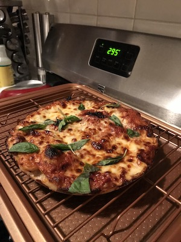
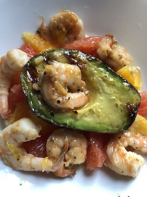
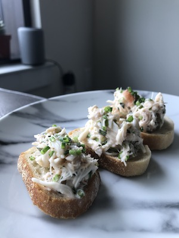
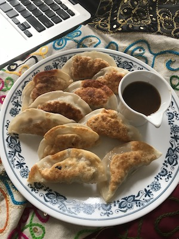
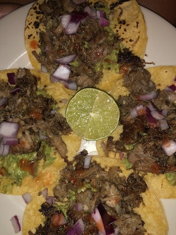

Lunch Recipes
- Personal Pizza 
- Shrimp and Grilled Avocado 
- Lobster and Crab Toasts 
- Vegetable Dumplings 
- Carnitas 
By definition, a personal pizza should be an adequate serving for one person's meal. While there is no definitive size, individual-sized pizzas usually range between 6 to 10 inches and are perfect to make at home in a cast iron skillet. Find the link to a cast iron skillet on my products page
This is a recipe that is 100% original. I grilled an avocado on my griddle pan (which you can buy here), then I sauteed some shrimp in a little butter with salt, pepper and garlic. To finish I sliced grapefruit and oranges, used half in the salad and the other half to make a citrus vinaigrette.
I found inspiration for these toats on the Couple in the Kitchen blog and I was very excited to try it out on my own. In my version I added Lobster to bring more variation to the dish.
Home made dumplings can be a fun dish to get the family involved. You can subsitute any filling you want to make your dumplings with vegetable, pork, shrimp etc. You can even prep and freeze them to have on hand. One of the most important things is how you wrap the dumplings. Learn the technique here.
Tacos can be quick and filling, to have these carnitas for lunch it is best to slow cook the carnitas overnight. Then whenever you are ready to eat, you can quickly pan fry the carnitas and throw it in your taco. Learn more about the process here.